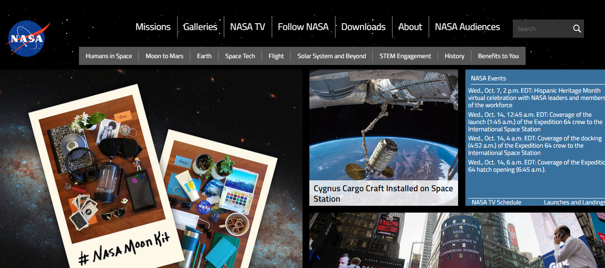

Bootstrap is a cross-platform library or open source toolkit for website design and web applications. It contains design templates with typography, forms, buttons, boxes, navigation menus, and other HTML and CSS-based design elements, as well as additional JavaScript extensions. Unlike many web frameworks, it only deals with front-end development..
Bootstrap allows us to create web interfaces with CSS and Javascript that adapt according to the size of the screen of the device from which we are browsing, so it is experiencing great growth in recent times, in which Google has just announced that it will punish Pages that do not have Responsive Design.
Bootstrap, originally called Twitter's Blueprint, was developed by Twitter's Mark Otto and Jacob Thornton, as a framework to encourage consistency between internal tools. Before Bootstrap, various libraries were used for user interface development, resulting in inconsistencies and a heavy maintenance workload..
El primer paso es incorporar bootstrap en nuestro proyecto web:
Podemos linkear
Bootstrap is the second most prominent project on GitHub and is used by NASA and MSNBC among other organizations. the most notable sites being companies such as:
Power by:
Martin Medina Ruvian - Daniel Valencia Ovallos
2020